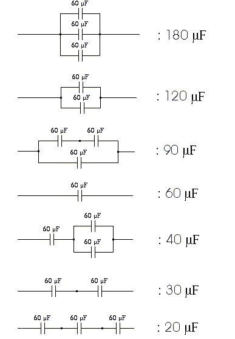

An electric circuit uses exclusively identical capacitors of the same value $C$.
The capacitors can be connected in series or in parallel to form sub-units, which can then be connected in series or in parallel with other capacitors or other sub-units to form larger sub-units, and so on up to a final circuit.
Using this simple procedure and up to $n$ identical capacitors, we can make circuits having a range of different total capacitances. For example, using up to $n=3$ capacitors of $\pu{60 \mu F}$ each, we can obtain the following $7$ distinct total capacitance values:

If we denote by $D(n)$ the number of distinct total capacitance values we can obtain when using up to $n$ equal-valued capacitors and the simple procedure described above, we have: $D(1)=1$, $D(2)=3$, $D(3)=7$, $\dots$
Find $D(18)$.
Reminder: When connecting capacitors $C_1, C_2$ etc in parallel, the total capacitance is $C_T = C_1 + C_2 + \cdots$,
whereas when connecting them in series, the overall capacitance is given by: $\dfrac{1}{C_T} = \dfrac{1}{C_1} + \dfrac{1}{C_2} + \cdots$